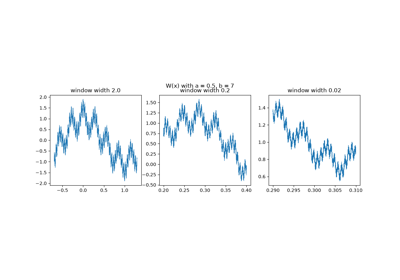
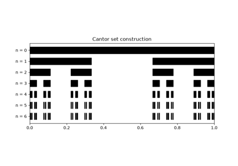
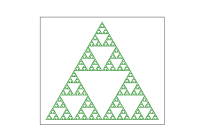
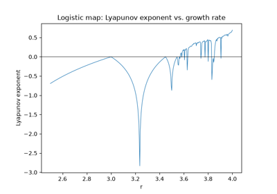
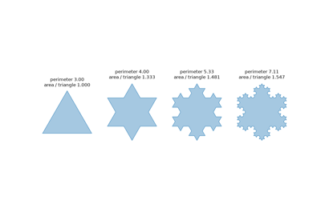
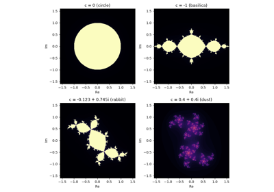
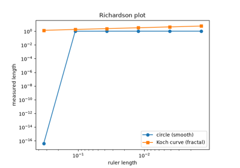
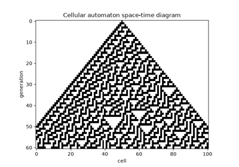
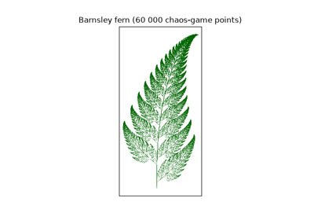

Breakthroughs in Fractals and Chaos#
“Clouds are not spheres, mountains are not cones, coastlines are not circles.” – Benoit Mandelbrot, The Fractal Geometry of Nature, 1982
The objects in mathematicskit.fractals_chaos – self-similar sets
of non-integer dimension, and cellular automata that build astonishing
complexity from a simple bit-flip rule – share a common thread. Each
was dismissed at its discovery as a pathological curiosity, and each
later turned out to describe something real. This chronology traces
that thread from 19th-century “monsters”, such as Karl Weierstrass’s
function and Georg Cantor’s set, to the computer-generated images that
gave the field its modern name.
1872 – Weierstrass’s Nowhere-Differentiable Function#
In a lecture to the Berlin Academy in 1872, Karl Weierstrass presented a function that is continuous everywhere but has a derivative nowhere:
Many mathematicians of the time assumed that a continuous function must be differentiable at most points, and Charles Hermite famously turned away “with fright and horror” from such functions. Weierstrass proved the property for odd \(b\) with \(ab > 1 + 3\pi/2\), and Godfrey Harold Hardy extended it in 1916 to every \(ab \ge 1\). The graph is equally rough at every magnification, and is now a standard example of a fractal curve.
Implementation: mathematicskit.fractals_chaos.systems.curves.weierstrass_function()
evaluates partial sums of the series. The tests show the difference
quotients growing as the step shrinks, and the example shows the
graph’s measured length growing without bound under finer sampling.
References: K. Weierstrass, “Über continuirliche Functionen eines reellen Arguments, die für keinen Werth des letzteren einen bestimmten Differentialquotienten besitzen” (1872), in Mathematische Werke, vol. 2 (Berlin: Mayer & Müller, 1895), 71-74; G. H. Hardy, “Weierstrass’s Non-Differentiable Function,” Transactions of the American Mathematical Society 17(3) (1916), 301-325.

The Weierstrass function: continuous, nowhere differentiable
1883 – Cantor’s Set and the First “Monster”#
Georg Cantor’s 1883 construction starts from \([0,1]\) and repeatedly removes the open middle third of every remaining interval. The result is a set that is uncountably infinite, has total length zero, and contains no interval at all. Nineteenth-century analysts mostly treated such constructions as pathological counterexamples to be avoided rather than objects worth studying. Nearly a century passed before Benoit Mandelbrot’s reframing (below) made “monster” sets like Cantor’s the central objects of an entire field.
Connection: the same self-similar, remove-and-recurse logic is the
subject matter of
mathematicskit.fractals_chaos.systems.box_counting.box_counting_dimension().
The Cantor set’s box-counting dimension, \(\log 2/\log 3 \approx
0.631\), is the standard first example of a non-integer fractal
dimension.
References: G. Cantor, “Über unendliche, lineare Punktmannichfaltigkeiten (5),” Mathematische Annalen 21 (1883), 545-591; G. Cantor, “De la puissance des ensembles parfaits de points,” Acta Mathematica 4 (1884), 381-392.

Cantor’s middle-thirds set and its dimension
1890-1916 – Peano and Sierpiński’s Space-Filling and Gasket Curves#
Giuseppe Peano’s 1890 continuous curve passes through every point of a filled square. It shocked contemporaries who assumed that a “curve” must be one-dimensional. Wacław Sierpiński’s 1915 triangle, and his closely related 1916 carpet, went the other way: they start from a filled shape and repeatedly remove the middle triangle (or square) of what remains. The limit is a self-similar set whose dimension is a definite fraction between 1 and 2.
Implementation: mathematicskit.fractals_chaos.systems.ifs.SierpinskiTriangle
and SierpinskiCarpet
generate both sets with the chaos game, and
mathematicskit.fractals_chaos.systems.box_counting.box_counting_dimension()
recovers their dimensions, \(\log 3/\log 2\) (triangle) and
\(\log 8/\log 3\) (carpet), numerically.
References: G. Peano, “Sur une courbe, qui remplit toute une aire plane,” Mathematische Annalen 36 (1890), 157-160; W. Sierpiński, “Sur une courbe dont tout point est un point de ramification,” Comptes Rendus de l’Académie des Sciences Paris 160 (1915), 302-305.

Box-counting dimension of the Sierpinski triangle
1891 – Hilbert’s Space-Filling Curve#
A year after Giuseppe Peano’s space-filling curve, David Hilbert gave a simpler geometric construction. Divide the square into four quarters, visit them in a U-shaped order, and repeat the pattern inside each quarter, rotated so that the pieces join end to end. The limit is a continuous curve that passes through every point of the square. Each finite stage visits every cell of a \(2^n \times 2^n\) grid while moving only between neighbouring cells, so points that are close along the curve are close in the plane. That locality property makes Hilbert curves useful today for ordering spatial data in databases and image processing.
Implementation: mathematicskit.fractals_chaos.systems.curves.hilbert_curve()
generates the order-\(n\) curve as grid coordinates, and the tests
check that it visits every cell exactly once in unit steps.
References: D. Hilbert, “Ueber die stetige Abbildung einer Linie auf ein Flächenstück,” Mathematische Annalen 38 (1891), 459-460.
1892-1985 – Lyapunov Exponents: Measuring Sensitive Dependence#
Edward Lorenz’s discovery of sensitive dependence on initial conditions (see the ODE-dynamics chronology) raised an obvious question: can that sensitivity be measured, not just observed? The Lyapunov exponent answers it. The exponent is named for Aleksandr Lyapunov’s 1892 theory of the stability of motion, but its modern algorithmic form, an average logarithmic rate of separation, comes from the numerical-chaos literature of the 1970s and 1980s. A positive exponent means that nearby trajectories separate exponentially fast (chaos); a negative one means that they converge (a stable orbit).
Implementation: mathematicskit.fractals_chaos.systems.lyapunov.lyapunov_exponent_1d_map()
and lyapunov_exponent_flow()
compute this exponent for a 1D map and for a flow. The flow version
uses the shadow-trajectory renormalization method of Giancarlo Benettin
and colleagues (1980).
References: A. M. Lyapunov, The General Problem of the Stability of Motion (Kharkov, 1892; in Russian); A. Wolf, J. B. Swift, H. L. Swinney, and J. A. Vastano, “Determining Lyapunov Exponents from a Time Series,” Physica D 16(3) (1985), 285-317.

Lyapunov exponent across the logistic map’s route to chaos
1904 – Koch’s Snowflake#
Helge von Koch wanted an example of a curve without tangents that could be built from elementary geometry rather than from Weierstrass’s series. His 1904 construction starts from a segment and repeatedly replaces the middle third of every segment with two sides of an equilateral triangle. Each step multiplies the length by \(4/3\), so the limiting curve is infinitely long, yet three copies around a triangle enclose a finite area, \(8/5\) of the starting triangle. The Koch curve is made of four copies of itself scaled by \(1/3\), which gives it dimension \(\log 4/\log 3 \approx 1.26\).
Implementation: mathematicskit.fractals_chaos.systems.curves.koch_curve()
and koch_snowflake()
build the refinements. The tests check the \((4/3)^n\) length law
and a box-counting dimension near \(\log 4/\log 3\).
References: H. von Koch, “Sur une courbe continue sans tangente, obtenue par une construction géométrique élémentaire,” Arkiv för Matematik, Astronomi och Fysik 1 (1904), 681-704.

The Koch snowflake: infinite perimeter, finite area
1918-1919 – Fatou and Julia’s Iteration Theory#
Around the end of the First World War, Pierre Fatou and Gaston Julia independently developed a deep theory of what happens when a complex rational function is applied to itself over and over. The complex plane splits into a “Fatou set,” where nearby orbits behave predictably, and a complementary “Julia set,” usually an intricate fractal boundary, where they do not. Both worked without computers, using pure complex analysis to describe sets that nobody could actually see for another sixty years.
Implementation: mathematicskit.fractals_chaos.systems.mandelbrot_julia.julia_set()
computes the Julia set of \(z\mapsto z^2+c\) by escape-time
iteration.
References: G. Julia, “Mémoire sur l’itération des fonctions rationnelles,” Journal de Mathématiques Pures et Appliquées, 8th series, 1 (1918), 47-245; P. Fatou, “Sur les équations fonctionnelles,” Bulletin de la Société Mathématique de France 47 (1919), 161-271.

Fatou and Julia: Julia sets of z -> z^2 + c
1918-1946 – Hausdorff, Moran, and the Similarity Dimension#
Felix Hausdorff’s 1918 paper defined a measure for every real dimension \(s\), and with it a dimension that need not be an integer. The Cantor set gets dimension \(\log 2/\log 3\), between a point and a line. For self-similar sets there is a simpler route. Patrick Moran proved in 1946 that if a set is made of pieces scaled by ratios \(r_i\) that do not overlap too much, its Hausdorff dimension is the unique \(D\) with
For \(m\) equal pieces of ratio \(r\) this is simply \(\log m/\log(1/r)\).
Implementation: mathematicskit.fractals_chaos.systems.curves.similarity_dimension()
solves Moran’s equation with scipy.optimize.brentq(). The example
compares the result with box-counting estimates for the Cantor set, the
Koch curve, and the Sierpiński triangle and carpet.
References: F. Hausdorff, “Dimension und äußeres Maß,” Mathematische Annalen 79 (1918), 157-179; P. A. P. Moran, “Additive Functions of Intervals and Hausdorff Measure,” Mathematical Proceedings of the Cambridge Philosophical Society 42(1) (1946), 15-23.

1961-1967 – Richardson, Mandelbrot, and the Length of a Coastline#
Lewis Fry Richardson, studying whether the length of a shared border affects the chance of war, noticed that published lengths of the same border disagreed wildly. Measuring maps with dividers, he found that the measured length \(L\) grows as the divider opening \(\varepsilon\) shrinks, following \(L \propto \varepsilon^{1-D}\). His results appeared posthumously in 1961. Benoit Mandelbrot’s 1967 paper “How Long Is the Coast of Britain?” read the exponent \(D\) as a fractional dimension: about 1.25 for the west coast of Britain and exactly \(\log 4/\log 3\) for the Koch curve.
Implementation: mathematicskit.fractals_chaos.systems.curves.divider_length()
walks a pair of dividers along a curve. On the Koch curve it returns
exactly \((4/3)^k\) for a ruler of length \(3^{-k}\), and the
example recovers \(D\) from the slope of the Richardson plot.
References: L. F. Richardson, “The Problem of Contiguity: An Appendix to Statistics of Deadly Quarrels,” General Systems Yearbook 6 (1961), 139-187; B. Mandelbrot, “How Long Is the Coast of Britain? Statistical Self-Similarity and Fractional Dimension,” Science 156(3775) (1967), 636-638.

How long is the coast of Britain? The divider method
1968 – Lindenmayer Systems#
Aristid Lindenmayer, a theoretical biologist, introduced in 1968 a way to describe how multicellular organisms grow. Every symbol in a string is rewritten simultaneously by a fixed rule, mimicking cells that divide in parallel. His first example modeled an alga with the rules \(A \to AB\) and \(B \to A\), whose string lengths are the Fibonacci numbers. Interpreted as turtle-graphics commands (move, turn, remember and restore a position), L-systems draw the Koch curve and other fractals, and with branching they produce realistic plants. This line of work was developed by Przemysław Prusinkiewicz in computer graphics.
Implementation: mathematicskit.fractals_chaos.systems.lsystems.lsystem()
performs the parallel rewriting, and
turtle_path()
turns a word into polylines. The tests confirm the Fibonacci lengths
and that the Koch L-system reproduces the direct construction.
References: A. Lindenmayer, “Mathematical Models for Cellular Interactions in Development, I and II,” Journal of Theoretical Biology 18(3) (1968), 280-315; P. Prusinkiewicz and A. Lindenmayer, The Algorithmic Beauty of Plants (New York: Springer, 1990).
1970-1983 – Conway’s Life and Wolfram’s Cellular Automata#
John Horton Conway devised the “Game of Life” in 1970, and Martin Gardner’s Scientific American column made it famous the same year. It is a simple two-state birth-and-survival rule on a 2D grid, yet it produces gliders and oscillators, and was later proved able to simulate a universal Turing machine. Stephen Wolfram’s systematic 1983 study looked at the far simpler one-dimensional, two-color “elementary” cellular automata. There are only 256 of them, each indexed by an 8-bit rule number, yet they include rules that generate the Sierpiński triangle (rule 90) and behavior Wolfram classified as chaotic (rule 30).
Implementation: mathematicskit.fractals_chaos.systems.cellular_automata.GameOfLife
and ElementaryCA
implement both. The latter uses Wolfram’s rule-numbering convention.
References: M. Gardner, “Mathematical Games: The Fantastic Combinations of John Conway’s New Solitaire Game ‘Life’,” Scientific American 223(4) (1970), 120-123; S. Wolfram, “Statistical Mechanics of Cellular Automata,” Reviews of Modern Physics 55(3) (1983), 601-644.

Elementary cellular automata and Conway’s Game of Life
1975 – Mandelbrot Names “Fractal”#
Benoit Mandelbrot’s 1975 book Les objets fractals: forme, hasard et dimension coined the word “fractal,” from the Latin fractus (“broken”). More importantly, it reframed the pathological curiosities of Georg Cantor, Giuseppe Peano, and Gaston Julia as the right mathematical language for rough, self-similar shapes – coastlines, mountain ranges, lung bronchi – that smooth Euclidean geometry had always struggled to model. Mandelbrot’s 1980 computer image of what is now called the Mandelbrot set became one of the most recognizable images in mathematics. The set contains every complex \(c\) whose Julia set is connected.
Implementation: mathematicskit.fractals_chaos.systems.mandelbrot_julia.mandelbrot_set()
generates this set by Numba-accelerated escape-time iteration.
References: B. B. Mandelbrot, Les objets fractals: forme, hasard et dimension (Paris: Flammarion, 1975); B. B. Mandelbrot, The Fractal Geometry of Nature (San Francisco: W. H. Freeman, 1982).
1976 – Hénon’s Strange Attractor#
The Lorenz attractor was hard to study because trajectories spend long stretches in regions where its structure is too thin to resolve. Michel Hénon, an astronomer, looked in 1976 for the simplest system with the same features and found the two-dimensional map \((x, y) \mapsto (1 - ax^2 + y,\; bx)\). With \(a = 1.4\) and \(b = 0.3\), orbits settle onto a strange attractor. Magnifying one of its curves reveals a bundle of parallel curves, and magnifying again reveals more, a Cantor-like layered structure. The map shrinks areas by the factor \(b\) at every step, yet nearby orbits separate with a Lyapunov exponent of about 0.42.
Implementation: mathematicskit.fractals_chaos.systems.maps.henon_map()
iterates the map. The tests check the map’s equations and a
box-counting dimension between 1.1 and 1.45, and the example estimates
the largest Lyapunov exponent.
References: M. Hénon, “A Two-Dimensional Mapping with a Strange Attractor,” Communications in Mathematical Physics 50(1) (1976), 69-77.
1981 – Witten, Sander, and Diffusion-Limited Aggregation#
Thomas Witten and Leonard Sander proposed in 1981 a model for how soot, metal deposits, and other aggregates grow. Particles are released one at a time far from a seed, wander at random, and stick where they first touch the cluster. Tips of branches catch wandering particles before they can reach the fjords between branches, so the cluster grows into an open, branched shape rather than a solid blob. The number of particles within radius \(r\) grows like \(r^D\) with \(D \approx 1.71\) in two dimensions. The same patterns appear in electrical discharges, viscous fingering, and mineral dendrites.
Implementation: mathematicskit.fractals_chaos.systems.dla.dla_cluster()
grows a cluster on the square lattice with a Numba-compiled random
walk. The tests check that the cluster is connected and that its
mass-radius dimension is near 1.71.
References: T. A. Witten and L. M. Sander, “Diffusion-Limited Aggregation, a Kinetic Critical Phenomenon,” Physical Review Letters 47(19) (1981), 1400-1403.
1988 – Barnsley’s Iterated Function Systems#
Michael Barnsley’s 1988 book Fractals Everywhere built on John Hutchinson’s 1981 theory of self-similar sets. It gave a unified way to generate self-similar fractals from a small set of contractive affine maps applied in random order, a procedure called the “chaos game.” One image made the technique famous: a strikingly lifelike fern generated from just four affine maps and their carefully chosen probabilities.
Implementation: mathematicskit.fractals_chaos.systems.ifs.BarnsleyFern
implements Barnsley’s four-map fern with
mathematicskit.fractals_chaos.utils.ifs_utils.chaos_game().
References: J. E. Hutchinson, “Fractals and Self-Similarity,” Indiana University Mathematics Journal 30(5) (1981), 713-747; M. F. Barnsley, Fractals Everywhere (Boston: Academic Press, 1988), Ch. 3.

Barnsley’s fern: an iterated function system